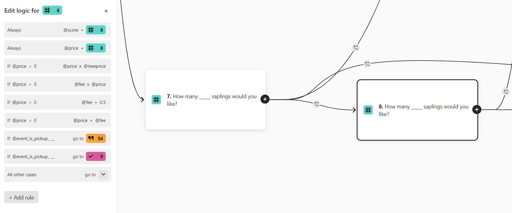

Typeform Integration
Typeform API wrapper with Read, Update, and Create capabilities. Update & Create are template based with pre-made Typeform variables.
Overview

To handle the many sources of POE data without hindering user experience, the Typeform API was used to create a robust form generation and processing software.
> This system is capable of automatically creating the neccessary sponsorship, purchase, and volunteer forms for each school with generic templates.
> The software also processes the responses from all forms in the templated group to maintain a centralized record.
Integrated Logic

> The system creates dynamic forms, adaptable to different prices, event types, and species choices.
> This is done using built-in typeform logic and custom variables which results in event specific order processes resulting from a single typeform template.